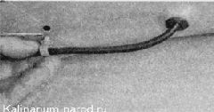

Капот - снятие, установка и регулировка положения
Работа показана с предварительной разборкой капота. Но при необходимости капот можно снять в сборе с установленными на него элементами. Для этого достаточно отсоединить шланг от насоса омывателя ветрового стекла и вытянуть шланг из уплотнителя перегородки моторного отсека.
Для выполнения работы потребуется помощник.
Снятие
1. Подготавливаем автомобиль к выполнению работы.
2. Торцовым ключом на 10 мм отворачиваем две гайки 1 крепления предохранительного крючка замка капота. Ключом на 41 мм или раздвижными пассатижами отворачиваем фиксатор замка капота 2.

3. Поддевая отверткой или съемником, извлекаем держатели обивки капота.
4. Снимаем обивку капота.
5. Поддевая отверткой, отсоединяем держатели шланга омывателя от капота. Отсоединив от тройника шланг, поддеваем отверткой резиновый уплотнитель и вытягиваем шланг омывателя из отверстия капота.

6. Через проемы в усилителе капота сжимаем два фиксатора форсунки. Извлекаем форсунку из отверстия капота и отсоединяем шланг от форсунок омывателя. Аналогично снимаем вторую форсунку.
7. Снимаем два шланга форсунок с тройником.
Сборка и установка
Собираем и устанавливаем капот в обратной последовательности.